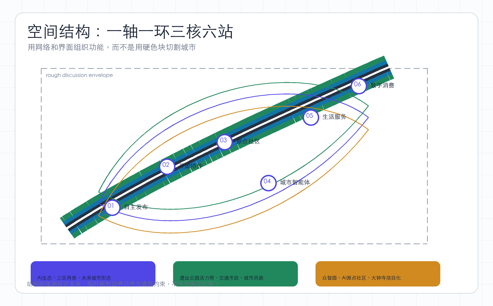

空间结构图

重点区域
北部众智园是自主创新与安全治理引擎；中部北京AI原点社区是近校创新与人才生活核心；南部大钟寺是智能体、数字内容和消费应用门户。
AI 场景
AI+交通、AI+公共空间、AI+生态、AI+教育、AI+医疗、AI+法律和AI+生活服务均需数据最小化、人工复核和退出机制。
建筑与更新项目
更新分为保留、微改造、复合更新和待确认四级。建筑规模、容积率、高度、道路红线和权属不作审定声明。
来源
依据来自官方公告、brief/site-package、本地标准快照和 provisional geometry。HTML 为离线文件，不加载远程资源。
假设
正式深化前必须补充官方红线、三处重点区边界、控规、权属、市政、消防、文保、交通影响和现状建筑资料。
A-BOUNDARY-001A-AREA-001A-CONTROLS-001A-OPERATIONS-001